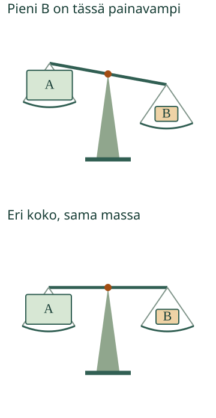

<link rel="stylesheet" href="lesson.css" />

<section data-teaching-step="1" data-lesson-role="teaching-step">
<section class="lesson-intro"><h2>Kumpi paketti on painavampi?</h2><p>Loikka pakkaa retkireppua. Suuri paketti näyttää painavalta. Voiko pelkkään kokoon luottaa?</p><p><strong>Vertaan painavuutta vaa’alla.</strong></p></section>
</section>


<section data-teaching-step="2" data-lesson-role="teaching-step">
<section><h2>Punnitse ja katso</h2><p>Kokeile aikuisen kanssa oikeaa vaakaa. Tyhjän vaa’an pitää olla suorassa. Pane esine kumpaankin kuppiin. Painavampi puoli painuu alas.</p><figure data-lesson-role="worked-example"><figcaption>Vaa’an asento kertoo tämän parin painavuudesta. Koko ei yksin ratkaise.</figcaption></figure><h3>Iso voi olla kevyt</h3><p>Iso tyhjä laatikko voi olla pientä täyttä pakettia kevyempi. Mutta iso paketti voi olla myös painavampi. Tutki vaa’alla.</p><h3>Entä suora vaaka?</h3><p>Kun molemmat paketit ovat vaa’alla ja kupit jäävät samalle korkeudelle, paketit ovat yhtä painavat.</p></section>
</section>


<section data-teaching-step="3" data-lesson-role="teaching-step">
<section data-mass-lesson hidden><div data-audience-columns><div data-visual-column><h2>Kokeile punnitusta</h2><p>Arvaa mielessäsi. Näytä sitten punnitus.</p><label>Retkipari<select data-case><option value="0">Iso ja pieni paketti</option><option value="1">Toinen retkipari</option><option value="2">Erinäköiset paketit</option><option value="3">Ison paketin toinen vertailu</option></select></label><div data-model></div><p data-model-note></p></div><div data-response-column><p><button type="button" data-action="weigh">Punnitse</button><button type="button" data-action="swap">Vaihda puolet</button></p><details data-lesson-role="teaching-step"><summary>Näytä hitaammin</summary><p><button type="button" data-action="rewind">Paketit pois vaa’alta</button><button type="button" data-action="step">Seuraava askel</button></p><p>Ensin A, sitten B. Kun vain A on vaa’alla, emme vielä vertaa sitä odottavaan B:hen.</p></details><p><strong>Kumpi paketti on painavampi?</strong></p><div class="answers"><button type="button" data-answer="A" aria-pressed="false">A</button><button type="button" data-answer="B" aria-pressed="false">B</button><button type="button" data-answer="same" aria-pressed="false">Yhtä painavat</button></div><p>Vaihda tai poista valinta painamalla vastausta.</p><button type="button" data-action="check">Tarkista</button><p data-feedback role="status" aria-live="polite">Tutki ja kokeile.</p></div></div></section>
<details data-lesson-role="hint"><summary>Apua</summary><p>Näytä molemmat paketit vaa’alla. Kumpi kuppi on alempana? Katso sen paketin kirjainta. Kun vaihdat puolet, sama paketti on yhä painavampi. Jos kupit jäävät samalle korkeudelle, valitse yhtä painavat.</p></details>
</section>


<section data-teaching-step="4" data-lesson-role="teaching-step">
<details data-lesson-role="teaching-step"><summary>Kokeile lisää</summary><p>Etsi aikuisen kanssa iso kevyt ja pieni painava esine. Etsi sitten kaksi erinäköistä esinettä, jotka ovat vaa’alla yhtä painavat. Voitko päätellä painavuuden väristä?</p></details>
</section>

<details class="teacher" data-lesson-role="teacher-note"><summary>Opettajalle ja ilman ruutua</summary><p>Luokat 1–2; vaadittu M-MEAS-00. Tavoite on massa mitattavana ominaisuutena, ei lukuarvon lukeminen. Lapselle käytetään sanoja painavampi, kevyempi ja yhtä painavat. Opettaja nimeää suureen massaksi. Vaaka toimii tässä samassa paikallisessa painovoimassa. Voiman ja massan eroa, kilogrammaa, grammoja tai muunnoksia ei vaadita.</p><p>Ideaalimalli: yhtä pitkät varret, samanmassaiset kupit, tyhjän vaa’an nollatasapaino. Punnukset ovat paikallaan kuhunkin käsin valittuun vaiheeseen asettuneita. Kallistuksen suunta näyttää vertailun; kulma ei ole massan lukuarvo. Paketin sisäinen mallimassa ei riipu piirroksen koosta tai väristä. Esimerkkipaketit eivät määritä kaikkien samanlaisten oikeiden pakettien massaa. Näytön kirjaimet A ja B seuraavat samaa pakettia myös puolten vaihtuessa.</p><p>Offline: varmista oikean vaa’an tyhjä tasapaino, valitse turvallisia esineitä, punnitse ja vaihda puolet. Pyydä perustelemaan havainto osoittamalla, ilman puhepakkoa. Lukutuki sallitaan. Lisähaaste: etsi kolmesta paketista painavin vertailemalla itse valitsemiasi pareja. Eri järkevät vertailujärjestykset kelpaavat.</p><p>Ruutu ei anna tuntoaistimusta eikä todenna oikean vaa’an käyttöä, esineiden todellisia massoja, mittaustarkkuutta tai yleistä hallintaa. Valmis vastaus ei todista käytettyä strategiaa. Harjoitus ei kerää vastauksia tai oppijahistoriaa. Puolten vaihto ja punnituksen esitysvaihe eivät muuta pakettien massoja; uusi pari ja vastausmuutos palauttavat palautteen neutraaliksi.</p></details>
<section data-teaching-step="5" data-lesson-role="teaching-step">
<p data-lesson-role="question"><strong>Lopuksi:</strong> Mistä näet painavamman? Mitä suora vaaka kertoo?</p>
</section>

